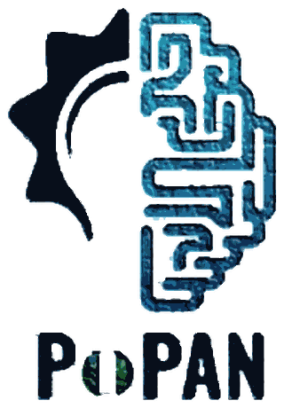

Constitution
The constitution of the Association, dated November 2020, is supreme in determining issues and disputes that arise under it.
PreambleIntroduction
We solemnly resolve to form an association that shall be known as POSITIVE PSYCHOLOGY ASSOCIATION OF NIGERIA (PoPAN). For governance, consistency and legality, this Association hereby makes, enacts and gives to its members the following constitution.
Article 1Supremacy of the constitution
This constitution shall be binding on all members, and its provisions shall be supreme in determining issues/disputes arising out of the application of its provision hereunder.
Rules and regulations made pursuant to this constitution shall be consistent with the provision of this constitution.
Any rule (s) or regulation (s) made pursuant to this constitution shall prevail, while those other rules and regulations shall, to the extent of the inconsistency, be null, void and of no effect.
Article 2Name and logo of the association
The association shall be known, called and addressed as Positive Psychology Association of Nigeria with the acronym PoPAN.
Corporate Seal
The corporate seal of the Association shall be

- The entire bulb shape represents the human mind and behaviour, where the brain is the physical or biological component and behaviour the mental or psychological aspect.
- The carbon black shade illustrates a barrier between itself and the outside world; it captures human insecurities, defeatism, negativity, lack of self-confidence, negative mind, and other metapathologies. The carbon black hex code is #000000.
- The eggshell white sphere depicts mental alertness, innocence, purity, and virginity and desire for change. The eggshell white hex code is #FFFFFF
- The royal blue section illustrates the positive mind blue is associated with independence, contentment, trustworthiness and reliability. The royal blue hex code is #4169e1.
- Dark blue is used to represent elegance, authority, and intelligence. Its hex code is #00008B.
- Combination of the royal and dark blue drives positivity which is the right mental and emotional attitude which facilitates happiness, health and success.
Article 3PoPAN Vision Statement
“To integrate, promote and facilitate the science and application of positive psychology in Nigeria and abroad”
Article 4PoPAN Mission Statement
Positive psychology is the scientific study of what enables individuals and societies to thrive. The mission of the Positive Psychology Association of Nigeria (PoPAN) shall be:
- To promote and integrate the science and application of positive psychology towards the advancement of people’s wellbeing locally and internationally.
- To facilitate global collaboration among researchers, teachers, students and practitioners of positive psychology.
- To disseminate and enhance the utilization of evidence-based findings of positive psychology with the broadest possible audience.
Article 5PoPAN Objectives
Positive Psychology Association of Nigeria is guided by the following objectives:
- To disseminate information on concepts, principles and strategies of positive psychology and how to be happily fulfilled in life.
- To provide practical and evidence-based solutions to human socio-psychological problems and to assist experts in skill acquisition.
- To offer e-counselling or face-to-face counselling services by experts on mental health-related issues.
- To liaise with individuals who have a common interest(s) to discuss social issues that bother on positive psychology – tips for optimal human functioning, and toolkits for making life worthy of living.
- To provide a platform for promotion of academic ideals, job vacancies, fellowship opportunities, scholarships, institutional admissions, professional advancement, publications, conferences, networking and mentoring.
Article 6PoPAN membership
Individual members of the Association shall be scholars, researchers and practitioners dedicated to the scientific study and evidence-based ethical application of positive psychology with a minimum of Master Degree in any field of psychology (e.g. Clinical, Counselling, educational etc) and allied professions.
Organizational members of the Association shall be regional, national, or international organizations with values and purposes consistent with those of the Association. Organizational membership shall include two categories: Institutional Membership for primarily non-profit organizations and Corporate Membership for for-profit organizations. The Board of Trustees shall establish the policies governing the participation of these member organizations in the activities of the Association.
An Awards Committee appointed by the Board of Trustees (BoT) may nominate as Fellows distinguished individuals who have made substantial contributions to positive psychology. A Fellow is granted dues-free Membership in the Association.
All fees, including annual membership dues and any other fees required for participation in Association activities, shall be approved by the Board of Trustees. At its discretion, the Board of Trustees may provide discounts to certain categories of members as well as opportunities for members to become benefactors of the Association through special contributions.
Article 7Suspension or termination of membership
Membership in the Association may be suspended temporarily or terminated permanently by (a) resignation, (b) non-payment of dues for two consecutive years or (c) by a decision of the Board of Trustees in the best interests of the Association where the BoT have evidence(s) of professional misconduct. An individual whose membership has been suspended or terminated shall be notified and may appeal that decision in writing to the Board of Trustees
Fellow status in the Association may be suspended temporarily or terminated permanently either by (a) resignation, or (b) by a decision of the Board of Trustees in the best interests of the Association, where the BoT have evidence(s) of professional misconduct. An individual whose Fellowship has been suspended or terminated shall be notified and may appeal that decision in writing to the Board of Trustees.
Article 8Affiliations
The Board of Trustees may accept, as an Affiliate Organization, any regional, national, or international organization with values and purposes consistent with those of the Association. Affiliate organizations may, through an agreement with the Board of Trustees, participate in PoPAN activities.
Article 9Executive committee members
The Executive committee members shall be responsible for the day to day running of the affairs of the Association and its finances while reporting to the BoT at the AGM.
The Executive committee members shall include the President, Vice President, Secretary, Assistant Secretary, Treasurer, Financial Secretary, Assistant Financial Secretary, Public Relations Officer and Internal Auditor. Executive committee members must be Members in good standing of the Association.
The terms of office are as follows: The President, Vice-President, and Past President Secretary, Treasurer and all other positions shall serve for two years as a single term at the first instance and eligible for re-election for another term of two years making a maximum of four years.
The immediate past President of the Association is an ex-officio member of the executive.
The head of a division of the Association shall be Chairman with other executive members Vice-Chairman, Assistant Secretary, Treasurer, Financial Secretary, Assistant Financial Secretary, Public Relations Officer and Internal Auditor. An executive committee member must be a Member in good standing of the Association. They shall serve for two years as a single term at the first instance and are eligible for re-election for another term of two years making a maximum of four years.
The immediate past Chairman of the Branch is an ex-officio member of the executive.
Article 10Board of trustees
The Board of Trustees shall be a minimum of 7 and a maximum of 9 members (in addition to ex officio members) generally representing the Association’s membership. The selection of the Board of Trustees shall prioritize participation by leading scholars as well as respected positive psychology practitioners. Members of the Board of Trustees must be Members in good standing of the Association.
The regular term of office for each member of the Board of Trustees shall be a single five years term after which the member shall be eligible for reelection for another term.
The Board of Trustees shall review the annual reports of activities provided by the Association’s Executive Committee, advising the Board of Trustees on the reports and on any other matters on which they are consulted.
The Executive Committees shall elect the members of the Board of Trustees in regular elections. In the event of a mid-term vacancy that needs to be filled, the Board of Trustees shall hold a special election.
The president and the Secretary of the Association shall be ex officio voting members of the Board of Trustees.
The Chairman Board of Trustees is appointed by the Board of Trustees for a two-year term, and maybe appointed for additional terms by the Board of Trustees only once.
The BOT members may appoint one or more additional non-voting members to the Board of Trustees for a limited term to carry out specific functions needed by the Association. Such additional officers shall serve for the period approved by the Board of Trustees.
Article 11Elections
Officers
The General Body of Registered Members shall elect a President, Vice- President, Treasurer, Secretary, Assistant Secretary, Assistant Financial Secretary, Internal Auditor and Public Relations Officer. These officers, the Chairman Board of Trustees, and any additional officers approved by the Board of Trustees for specific functions shall be appointed through elections.
Board of Trustees
New members of the Board of Trustees, as well as those standing for reelection, shall be elected by the current members of the Board of Trustees.
Nomination Committee
It shall be the duty of the Board of Trustees to appoint a Nominating Committee which will comprise the Board of Trustees and/or Executive committee to prepare a list of nominees to be considered for reelection or for filling vacancies on the Board of Trustees and the Executive Committee.
Voting
The vote for the election or reelection of members of the Board of Trustees (as described in Section 11.1 above) and the Executive Committee (as described in Section 11.2 above) shall be made by secret electronic ballot by the Electoral Committee. Elections are not officially complete unless each member has had a reasonable opportunity to engage in the voting process, and a quorum of members (50% plus one) has voted.
Article 12Divisions
Divisions may be organized to represent major scientific and professional interests within the Association. All division members must be members of the Association.
A division is established when these conditions are satisfied: (a) the Board of Trustees recommends a new division and the leaders of the new division are selected and subsequently approved by the Board of Trustees, OR (b) whenever 50 or more members petition for a new division, the Board of Trustees shall approve, and the leaders of the new division selected and subsequently approved by the Board of Trustees. Divisions must comply with the PoPAN Constitution and Association Rules. A division may be dissolved by the Board of Trustees when the number of members in the division falls below 25 members, when the division no longer meets the needs of the Association, if the division fails to comply with the PoPAN Constitution or Association Rules, or when the division votes to recommend dissolution.
A division shall have a Chairman and a Secretary with such other officers as it may determine. Each division may draw up and maintain its Bylaws and Division Rules as long as they are consistent with PoPAN’s Constitution and Association Rules, and shall be approved by the Board of Trustees.
The Chairman of each division shall serve as an ex officio member of the General Association’s Board of Trustees.
Primary support for Divisions shall come from the members of the Association in each Division for their operational and administrative activities. In addition to this, on an annual basis, and in an amount to be determined each year by the Executives and approved by the Board of Trustees, the Association shall fix dues or other sources of revenues generation. Divisions are in charge of their dues and remit a percentage to the Association.
In each year, and no later than March 1, each division shall submit a full report that covers the activities of the Division during the preceding year to the National Executive. The President of the Association shall notify all Divisions of the reporting deadline no later than January 15.
Article 13Meetings
The Positive Psychology Association (PoPAN) shall meet, at the discretion of the Executive, as often as is needed. The meetings may be face to face, electronic, or teleconference.
The Executive of the Association shall meet regularly. Special meetings of the Executives may take place at other times as determined by the Board of Trustees.
The Board of Trustees shall meet face to face at the Annual Conference of the Association (or at some other mutually agreeable time and place). Additionally, it shall meet, at the discretion of the President, as often as is needed to manage the business of the Association. These additional meetings may be face to face, electronic, or teleconference.
Article 14Finances
Payment of expenses shall be made by the Financial Secretary or his or her designee who shall have the power to receive funds, to open banking accounts, to sign cheques in the Association's name, and, with the approval of the President.
The President has to approve all transactions and be the principal signatory to the account.
Oversight of the Association’s financial activity is the responsibility of the Treasurer, and shall minimally include timely financial reports.
The Auditor would audit all income and expenditures and approve quarterly financial reports.
The Chairman, Board of Trustees must be informed for an appropriate investment of the Association’s funds.
In the absence of the Chairman Board of Trustees, the President shall be authorized to approve payment of funds in the Association's name.
Article 15Life of the association
The Association may be certified in various regions of the country as Branches and shall have a Secretariat at a fixed location to be determined and approved by the Board of Trustees.
The termination of the Association can only be determined by a three quarter majority vote of the Board of Trustees.
The Board of Trustees, if considering termination of the Association, shall seek comments from the Executive Committee Member and the general membership at least six months in advance on the advisability of doing so.
The Board of Trustees shall always be the stabilizing force in PoPAN. Where there is a crisis in PoPAN or the Executive Committee is enmeshed in crisis, BoT shall step in to resolve such crisis or direct the Association to elect new Executive members.
If the Board of Trustees should decide to terminate the Association, it may allocate the net assets of the Association to one or more public bodies recognized as being in the public interest and pursuing aims consistent with those of the Association, provided that the Board of Trustees approves through a three quarter majority vote. An announcement of such a decision must be made to the membership at least 90 days before termination.
Article 16Annual Convention
There shall be an Annual Convention of the Association at a time and place to be determined by the Executive of the Association and approved by the Board of Trustees. Joint meetings with related societies shall be subject to the approval of the Board of Trustees.
Article 17Amendments
Amendments to the Constitution may be proposed by members of the Board of Trustees or the Executive Committee Members, or by any Fellow or Member of the Association. Amendments approved by a two-thirds vote of the Board of Trustees shall become part of this Constitution.